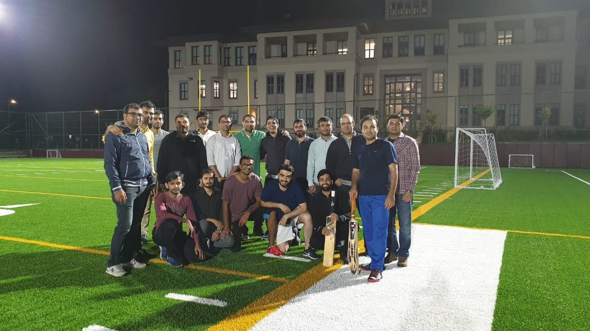
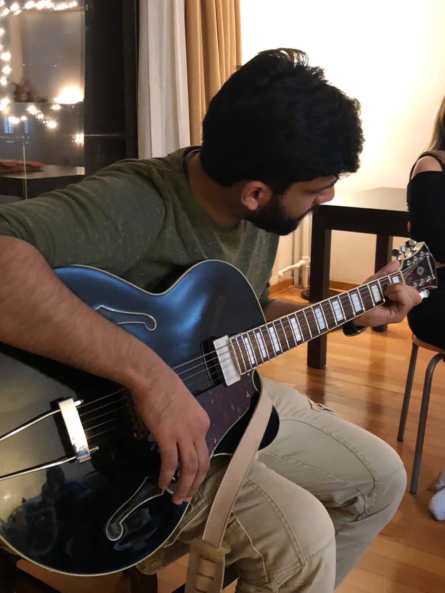

Cricket
Cricket is the most popular game in Pakistan. It is played between two teams of 11 with various numner overs. You can read more about the game here. We have a huge Pakistani Community here at Koc University. Recently, our cricket club has become official cricket team of Koc University and I am the President of the cricket club. It is weekly activity and we play every Saturday. We are planning to involve more students in the cricket.
Music and Poetry
They say that the music is food for the soul. I agree with this statement. I have gone a little further and rather than just consuming the food, I have started to produce some as well. I am fond of playing the musical instruments. I have learned piano and guiter as of yet and am planning to learn more. Moreover, I write poetry; mostly in Urdu, but sometimes in english as well. You can follow my social media to listen to my master pieces.
Gym and Workout
Healthy body ensures the healthy mind. When you are in academia, you are stuck in many things from reasearch to the courses. During all this, the mind gets very tired and the workout is an activity that does not require much of the brains but can be very valuable when it comes to the mind and body health. To all the students, I would recommend you to push yourself towards the activity for improved prductivity.